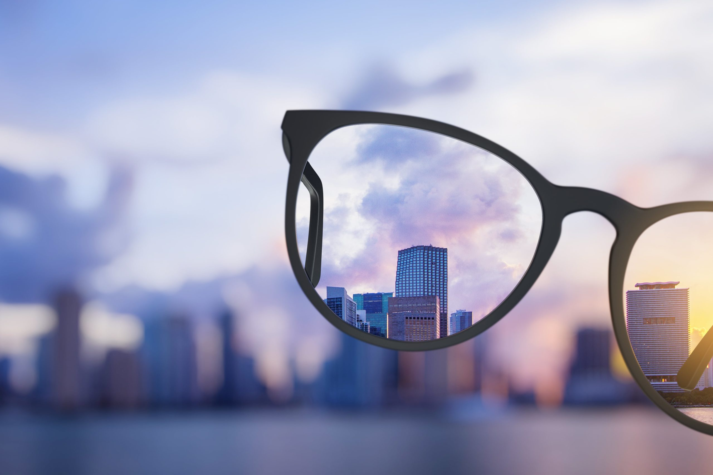

What are some eye health problems we could have?
-
Myopia (Nearsightedness): Difficulty seeing distant objects clearly.
-
Hyperopia (Farsightedness): Difficulty focusing on nearby objects.
-
Eye strains: A common condition that occurs when you overuse your eyes to stare at a screen or while driving overnight. Your eyes start to ache and get dry.
-
Dry eye: Happens if you spend a lot of time looking at your computer, tablet, or smart phone
-
Cataracts: Clouding of the lens, which causes vision problems. Must be treated and taken care of, before it leads to vision loss.
-
Some unfortunate people were born with vision loss, or blindness. They can also be treated but won't be perfect anymore.
-
Please appreciate and take good care of your eyes, as you only get one pair. Looking at computer screens for too long, not drinking enough water when working, and other activities you do that causes the eyes to weaken. Please avoid such actions, or take small breaks in middle.

